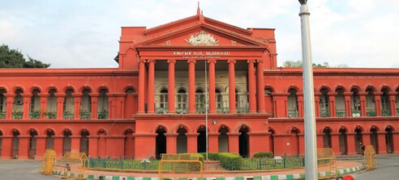
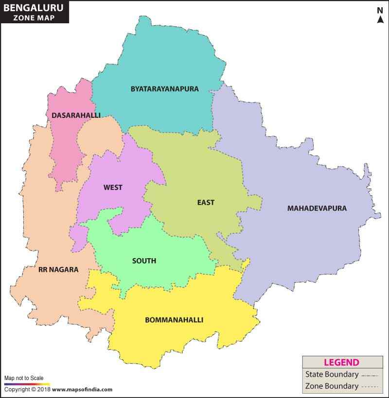

Bangalore(Urban)
Bangalore, often referred to as the "Silicon Valley of India," is a city that beautifully blends the contemporary with tradition. This bustling metropolis, located in the heart of Karnataka, is renowned for its stunning landscapes, vibrant culture, and technological advancements. One of the most striking aspects of Bangalore is its year-round pleasant weather, earning it the nickname "The Garden City of India." The city is adorned with lush greenery, charming parks, and tree-lined avenues that provide respite from the hustle and bustle of urban life. Lalbagh Botanical Garden, in particular, stands as a testament to the city's commitment to preserving its natural beauty.

But Bangalore's beauty extends beyond its natural attractions. The city boasts a thriving cosmopolitan culture, with a diverse population that brings together various traditions, languages, and cuisines. This cultural amalgamation is evident in the city's diverse food scene, where you can s avor everything from authentic South Indian dishes to global culinary delights. The architectural beauty of Bangalore is another noteworthy feature. The city seamlessly integrates modern skyscrapers with historical landmarks. The iconic Vidhana Soudha, a grand structure built in the Dravidian style, is a symbol of political power and architectural elegance. Additionally, the city is home to numerous temples, palaces, and museums, each narrating its own chapter in the city's history.
Bangalore's vibrant nightlife, music and arts scene, and educational institutions have earned it the reputation of being a hub for young talent and innovation. Its numerous technology parks and startups are instrumental in driving the country's IT and tech revolution, earning it the moniker "The Silicon Valley of India." In essence, Bangalore is not just a city; it's a harmonious fusion of nature, culture, and progress. Its beauty lies in its ability to embrace change while honoring its rich heritage, making it a city that captivates the hearts of residents and visitors alike.
